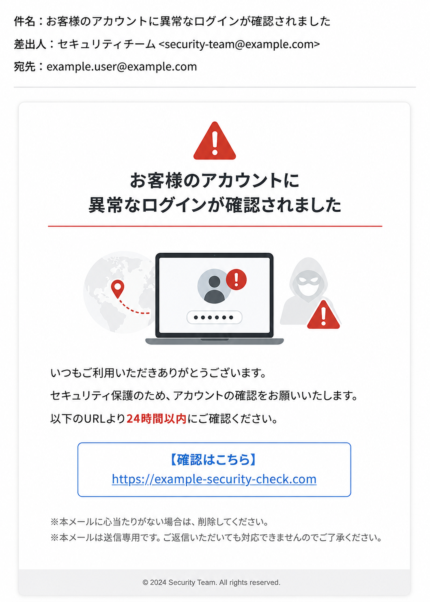
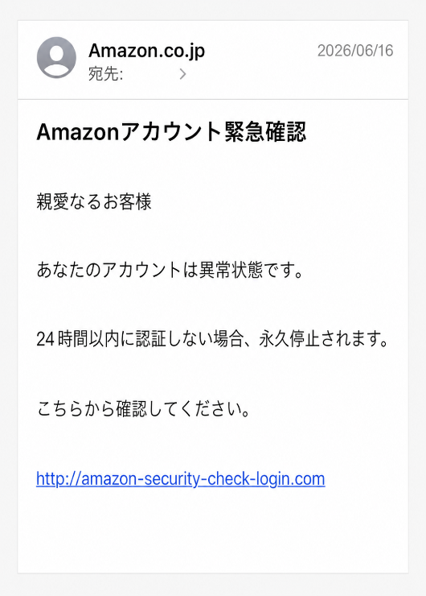

はじめに
ある日、次のようなメールが届いたとします。

あなたならどうしますか？
実は、このようなメールの多くは
である可能性があります。
近年、フィッシング詐欺による被害は急増しています。
しかも攻撃者は年々手口を巧妙化させており、一見すると本物と区別がつかないメールも少なくありません。
今回は、偽メールを見抜くポイントと、被害に遭わないための対策について学びましょう。
フィッシング詐欺とは？
フィッシング（Phishing）とは、
本物の企業やサービスになりすまして個人情報を盗む詐欺
です。
主な目的は、
- ID
- パスワード
- クレジットカード情報
- 銀行口座情報
- 個人情報
を盗むことです。
攻撃者は、
- 銀行
- クレジットカード会社
- Amazon
- 楽天
- 宅配業者
- 税務署
- 通信会社
などを装います。
利用者が偽サイトへアクセスし、情報を入力すると、その内容が攻撃者に送信されます。
なぜ騙されるのか？
「そんなメールに騙される人なんているの？」
と思うかもしれません。
しかし、攻撃者は人間の心理を巧みに利用しています。
例えば、
- 不安
- 焦り
- 驚き
- 欲
を刺激します。
例1：不安をあおる
「アカウントが停止されます」
「不正利用が確認されました」
「セキュリティ上の問題があります」
例2：焦らせる
「24時間以内に対応してください」
「本日中に確認してください」
「期限切れになります」
例3：得をさせる
「ポイントが当選しました」
「無料ギフトを受け取れます」
「特別キャンペーン実施中」
人は冷静な判断ができなくなると、普段なら気付く違和感を見逃してしまいます。
最近よくある偽メール
最近特に多いのが次のパターンです。
宅配業者を装うメール
お荷物のお届け先が不明です。
再配達の手続きをお願いします。
宅配を利用する人が多いため非常に効果的です。
Amazonを装うメール
お客様のアカウントに問題が発生しました。
支払い情報を更新してください。
ネットショッピング利用者を狙っています。
クレジットカード会社を装うメール
不審な利用を検知しました。
本人確認をお願いします。
実際にカード会社から連絡が来ることもあるため見分けが難しくなります。
銀行を装うメール
セキュリティ強化のため認証をお願いします。
口座情報やワンタイムパスワードを狙います。
本物か偽物かクイズ
次のメールを見てください。

どうでしょうか？
違和感はありますか？
答え
偽物の可能性が高いです。
理由は、
- 日本語が不自然
- 過度に焦らせている
- URLがAmazonではない
からです。
本物そっくりでも、
URLを見る習慣
が非常に重要です。
偽メールを見抜く7つのポイント
1. 差出人を確認する
メールアドレスを見てみましょう。
例
amazon-support@gmail.com
Amazon公式なのにGmailだったら怪しいですよね。
差出人名だけで判断しないようにしましょう。
2. 日本語がおかしい
海外の攻撃者が作成している場合があります。
例えば、
- 敬語がおかしい
- 漢字の使い方がおかしい
- 不自然な文章
などが見られます。
3. 過度に焦らせる
次のような表現は要注意です。
- 今すぐ
- 本日中
- 24時間以内
- 緊急
焦らせるのは詐欺の定番です。
4. URLを確認する
もっとも重要なポイントです。
例えば、
本物
https://amazon.co.jp
偽物
https://amazon-security-login.com
一見似ていますが全く別サイトです。
5. 添付ファイルに注意
添付ファイルを開くことで、
- ウイルス感染
- ランサムウェア感染
することがあります。
身に覚えのない添付ファイルは開かないようにしましょう。
6. 個人情報を要求してくる
本物の企業はメールで
- パスワード
- 暗証番号
- クレジットカード情報
を聞くことはほとんどありません。
要求されたら疑いましょう。
7. クリックする前に考える
もっとも効果的な対策です。
クリックする前に、
「本当に必要なメールか？」
を考えるだけで多くの被害を防げます。
もしクリックしてしまったら？
誰でも間違えることはあります。
重要なのは、
クリックした後の対応です。
URLを開いただけ
すぐに閉じましょう。
それだけで被害にならない場合もあります。
パスワードを入力した
すぐに変更しましょう。
同じパスワードを使っているサービスも変更します。
クレジットカード情報を入力した
カード会社へ連絡します。
利用停止や再発行が必要になる場合があります。
不安な場合
家族や詳しい人へ相談しましょう。
一人で抱え込まないことが重要です。
フィッシング詐欺は進化している
最近はAI技術の発達により、
- 自然な日本語
- 本物そっくりのサイト
- 本物そっくりのメール
が簡単に作られるようになりました。
昔のように、
「日本語がおかしいから偽物」
とは限りません。
そのため、
メールの内容ではなく行動で判断する
ことが重要です。
今日からできる対策
次の習慣を身につけましょう。
- URLを確認する
- メールのリンクを直接開かない
- ブックマークからアクセスする
- 多要素認証を設定する
- 不審な添付ファイルを開かない
- 焦って行動しない
これだけでも被害の大半を防ぐことができます。
まとめ
今回のポイントを振り返りましょう。
- フィッシング詐欺は個人情報を盗む詐欺
- 大手企業になりすますことが多い
- 不安や焦りを利用してくる
- URL確認が最重要
- 添付ファイルにも注意
- パスワードやカード情報を安易に入力しない
- AIによって今後さらに巧妙化する
次回は、
「第5章 危険なWebサイトの見分け方 ～偽サイトに騙されないために～」
について解説します。
メールだけでなく、Webサイトにも多くの危険が潜んでいます。